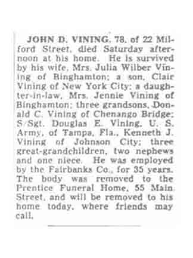
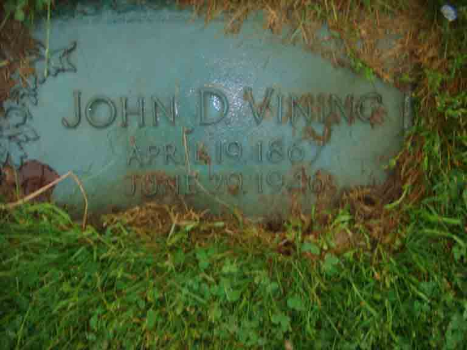
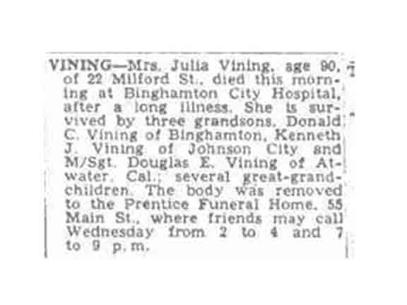

Documentation for John Decker Vining - Julia Wilbur
Census Data
| |
1900 |
1910 |
1920 |
1930 |
1940 |
| John Decker Vining |
32 |
? |
? |
? |
? |
| Julia (Wilbur) Vining |
30 |
? |
? |
? |
? |
| Clair Wilbur Vining |
8 |
? |
? |
? |
? |
1900 Conklin, Broome County, New York - dwelling 115, family 105:

Death Data
Obituary for John Decker Vining, published Monday, 1 July 1946, in Binghamton Press, Binghamton, New York:

Gravestone for John Decker Vining, in Vestal Hills Memorial Park, Vestal, Broome County, New York (from Find A Grave):

Obituary for Julia Wilbur, published Tuesday, 19 January 1960, in Binghamton Press, Binghamton, New York:
